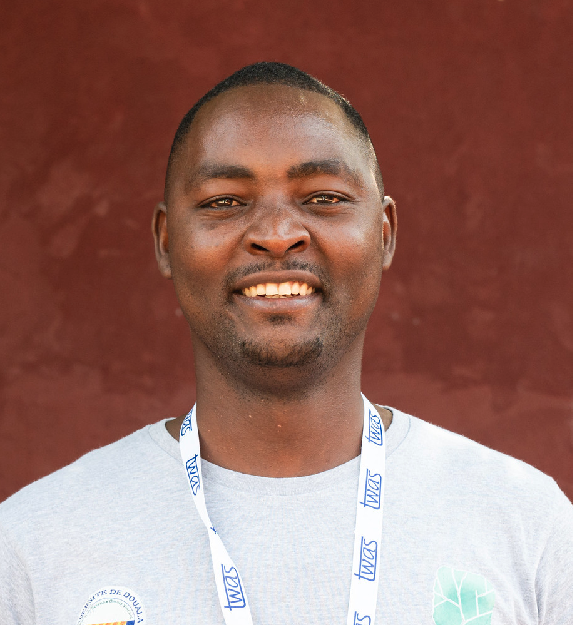

Senior Lecturer in Computer Engineering & Information Security
I am currently a Senior Lecturer in the Department of Computer Engineering at the National Advanced School of Engineering of Yaounde, University of Yaounde I, Cameroon.
Prior to joining the University of Yaounde I, I was a postdoctoral researcher at Inria, in the ARIC team at ENS de Lyon, where I worked with Prof. Damien Stehlé on post-quantum cryptography. I received my PhD in Computer Science from Université de Rouen-Normandie, within the C&A team of LITIS and the ERAL team of the University of Yaounde I, under the supervision of Prof. Ayoub Otmani and Prof. Sélestin Ndjeya.
My research interests include post-quantum cryptography, code-based cryptography, rank-metric codes, cryptanalysis, and the formal analysis of security assumptions. I am also developing research activities in applied information security, including cloud steganography, privacy risk modeling, web security, and the protection of personal data in modern digital systems.
I am involved in teaching and supervision in cryptography, data security, cybersecurity and programming. I also collaborate with several research groups on topics at the interface of theoretical security, applied cybersecurity, and information protection.
+237 6 95 38 17 50
herve [dot] tale [at] univ [dash] yaounde1 [dot] cm
1st floor, Department of Computer Engineering
BP 3614 Yaounde-Messa, Yaounde, Cameroon